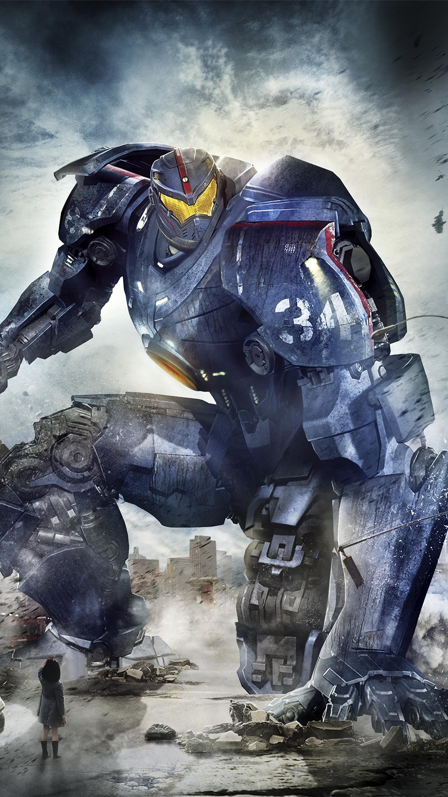

Bem-vindo ao nosso site sobre Circulo de Fogo!
Venha conhecer o caotico mundo do cenario de Circulo de fogo, ele esta repleto de emoções e desafios, o objetivo de seus herois ou então "jaggers".
mas do outro lado tambem temos seus inimigos, chamados kaijus monstros gigantes e exploradores, que ivadem planetas e o tomam para si.
Kaijus e a fenda interdimensional: Os Kaijus são monstros gigantes que surgem de uma fenda interdimensional no fundo do Oceano Pacífico, conhecida como "A Brecha" (The Breach). Eles são enviados por alienígenas chamados Precursores, que querem colonizar a Terra.
Jaegers: Para combater os Kaijus, a humanidade cria os Jaegers — robôs gigantes pilotados por duas pessoas. Os pilotos compartilham uma conexão mental chamada "deriva", que exige grande compatibilidade emocional e mental entre eles.
A decadência dos Jaegers: Com o tempo, os Kaijus começam a se tornar mais fortes e numerosos, tornando os Jaegers menos eficazes. Muitos países começam a abandonar o programa Jaeger e investem em construir muros gigantes (que falham miseravelmente).
Personagens principais: O protagonista é Raleigh Becket, um ex-piloto de Jaeger traumatizado pela morte do irmão. Ele volta à ativa para pilotar o Jaeger Gipsy Danger com Mako Mori, uma nova recruta com um passado trágico.
Estilo e influência: O filme é uma homenagem clara aos animes de mechas e filmes japoneses de monstros (como Godzilla). Guillermo del Toro apostou em efeitos práticos, design detalhado e batalhas épicas para trazer esse universo à vida.
Robos Gigantes defensores da terra
🔍 1. Guillermo del Toro queria evitar clichês de Hollywood
O diretor evitou mostrar cenas tradicionais de destruição em massa (como ataques a Nova York ou Paris). Ele quis criar algo novo, com foco nas cidades do Pacífico e mais diversidade cultural no enredo.
🤖 2. Os Jaegers têm nacionalidade e personalidade
Cada Jaeger tem nome, estilo de luta e design únicos, baseados na cultura do país de origem:
Gipsy Danger (EUA): Visual inspirado em aviões da Segunda Guerra.
Crimson Typhoon (China): Possui três braços e é pilotado por trigêmeos.
Striker Eureka (Austrália): O mais rápido, estilo militar clássico.
🧠 3. A "deriva" foi inspirada em empatia real
O conceito de dois pilotos conectados mentalmente foi inspirado na ideia de que duas pessoas próximas emocionalmente podem compartilhar memórias, traumas e pensamentos, quase como uma forma de "telepatia emocional".
🦑 4. Kaijus foram feitos para parecer reais
Del Toro pediu que cada Kaiju tivesse um design único, com aparência de criatura real. Eles usaram referências de insetos, répteis e animais marinhos, e os movimentos foram criados pensando em peso e gravidade, pra parecer que realmente estão esmagando tudo por onde passam.
🎨 5. Sem roupa verde no set
O diretor proibiu o uso de telas verdes, preferindo construir cenários gigantes reais para os atores. As cabines dos Jaegers, por exemplo, foram montadas com plataformas móveis, e os atores eram sacudidos de verdade pra simular os movimentos da luta.